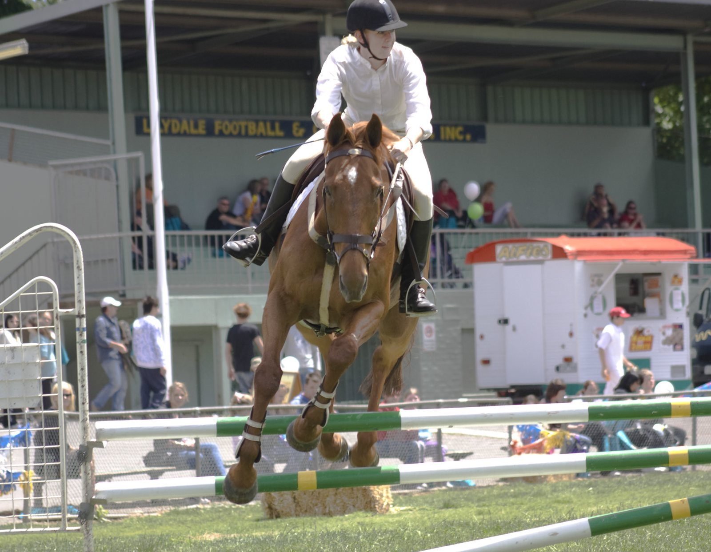

Anthony Bourquard gana el Gran Premio Copa del Mundo de 1,50 m del CSI4*-W de Tétouan
El suizo Anthony Bourquard se impuso el domingo con Fontaineblau Manciais en el Gran Premio Copa del Mundo de 1,50 m del CSI4*-W de Tétouan, la prueba que abría la 15.ª edición del Morocco Royal Tour. Paró el crono en 40,63 s en el desempate y se llevó el Premio SAR el Príncipe Heredero Moulay El Hassan.

El suizo Anthony Bourquard se impuso el domingo con Fontaineblau Manciais en el Gran Premio Copa del Mundo de 1,50 m del CSI4*-W de Tétouan, la prueba que abría la 15.ª edición del Morocco Royal Tour. Paró el crono en 40,63 s en el desempate y se llevó el Premio SAR el Príncipe Heredero Moulay El Hassan.
Tomaron la salida 42 binomios. En el desempate, la griega Ioli Mytilineou y Casanova Hastak se quedaron a 55 centésimas (41,18 s), y la irlandesa Niamh McEvoy, con Sevilla van de Berghoeve Z, fue tercera con 42,49 s. La francesa Jeanne Sadran y Dexter de Kerglenn, también sin faltas, terminaron cuartas en 43,23 s.
Es la primera victoria de Bourquard con Fontaineblau Manciais, y llega en su regreso a Tétouan tras siete años sin competir en el concurso. McEvoy se llevó además el Premio FRMSE del CSI4*, con 42,86 s.
El Morocco Royal Tour continúa en Rabat con la Copa de Naciones, donde Bourquard ha anunciado que formará parte del equipo suizo.
— Redacción de Hípica al Día